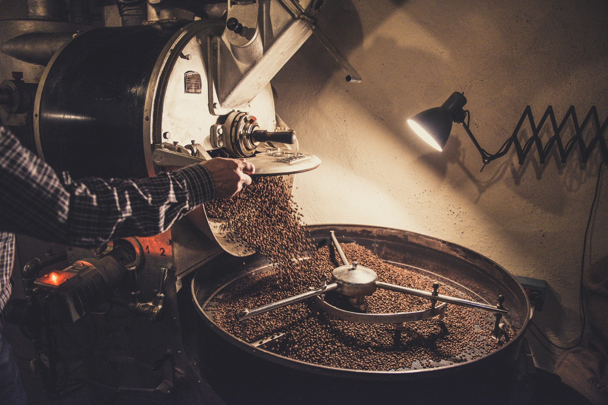

- 특징과 오해
- 역사
- 품종들
- 생산
- 세계 3대 커피?
- 가공 및 제조
- 추출 방법에 따른 커피 종류
- 즐기기 위한 팁과 맛
가공 및 제조

껍질 벗기기
커피열매는 다 익으면 붉은 껍질이다.[40] 크기는 체리 정도. 대추같이 생긴 열매에서 과육을 벗기고 씨앗을 말린 것이 바로 우리가 흔히 부르는 커피다. 누리끼리한 초록색이 돌도록 말린 씨앗을 '생두(Green bean)'라 하는데, 모든 커피 가공의 기본 재료라고 할 수 있다. 씨앗을 감싸고 있는 과육도 새콤달콤하며 산지에선 주스 등으로 음용한다. 단 과육에도 카페인이 함유되어있기 때문에 입에 붙는다고 줄창 먹다간 부작용이 생길 수 있다.
보통 커피 열매 한개에는 씨앗 두 개가 들어있다. 그런데 간혹 커피 열매 한 개에 씨앗이 한 개만 있는 경우가 있는데 이것을 피베리라고 한다. 일반적인 원두와 다른 독특한 풍미를 갖고 있는 것이 특징.[41]
가공
커피 열매의 껍질을 벗겨내는 방법은 크게 건식(Natural) 가공과 수세식(Washed) 가공이 있다. 일반적으로 중동, 남아메리카 지역이나 동남아 지역에는 건식 가공 원두가, 아프리카나 중부 아메리카 지역에는 수세식 가공 원두가 많다. 이외에도 여러 방식으로 가공된다.
건식 가공(내추럴)은 말 그대로 말려서 과육을 떼어내는 것이다. 한국에서 고추를 널어 말리는 것처럼 커피 열매를 널어 말린 뒤 마른 과육을 맷돌이나 절구 등을 이용하여 껍질을 벗겨내는 방식이다. 물이 귀한 중동 지역에서 유래되었다. 말리는 과정 중 특유의 다크초콜릿과 견과류같은 풍미가 생기며 수세식 가공 원두에 비해 자연적인 단맛이 유지되므로 단맛이 은은하게 나서 이러한 풍미를 배가시킨다. 일부 지역에서는 아예 커피 열매가 나무에 달린 채로 마를 때까지 놔뒀다가 따서 가공하기도[42]하는데(sun-dried on the tree) 이런 경우 열매가 무르익어서 고유의 단맛이 더욱 강해진다.
수세식 가공(워시드)은 커피 열매를 물에 담가두어 과육이 불어서 떨어지면 씻어내어 가공하는 것이다. 비교적 물이 풍부한 에티오피아 남부나 케냐에서 유래되었다. 물에 담가두는 중 일종의 발효 작용이 발생하여 독특한 신맛과 복합적인 과일향을 가지게 된다. 지역에 따라 가공 방법이 조금씩 다른데, 씻어낸 뒤 바로 햇볕에 말리는 것이 기본이나 한 번 씻어낸 뒤 그 물에 다시 일정 기간 담가두어 2차 발효를 유도한 뒤 말리는 곳도 있다. 수용성인 카페인이 물에 녹아서 어느 정도 빠지기 때문에 카페인 함량이 건식 가공에 비해 낮다.[43]
코스타리카에서 개발한 건식과 수세식의 절충안인 허니 프로세싱이라는 방식도 있다. 점액질을 어느 정도 남기고 가공하는 방식인데, 허니 프로세싱의 ‘허니(Honey)’는 가공 과정에서 생두에 남아 있는 점액질이 마치 꿀처럼 보인다고 하여 이름이 붙여졌다. 이렇게 하면 단맛과 향미를 원두에 농축시키기 때문에 다른 가공법에 비해 비교적 단맛이 높은 편이기도 하다. 허니 프로세싱은 또 점액질을 얼마나 남길 것인지에 따라 세분화된다.[44]
무산소 발효 프로세싱(anaerobic processing)이라는 시범적으로 쓰이는 가공법도 있다. 다른 커피체리에서 얻어진 점액질만을 따로 모아 파치먼트 상태의 생두와 함께 무산소탱크에 밀봉한 후 천천히 발효과정을 거치는 식이다. 이를 거친 생두는 알코올, 와인, 메주 등 발효 음식을 연상시키는 강렬하고 자극적인 향미를 얻게 된다.
인도네시아에서는 기후가 워낙 악천후인지라, 대부분의 가공 과정에서 커피 열매를 세척 직후 완전 건조하지 못하고 거의 바로 까 버리기 때문에 생두에 수분이 많이 남게된 상태로 판매하게 된다. 이를 현지어로는 길링 바사/영어로는 세미워시드, 웻 훌드(Wet Hulled)라 부르는데 이러한 과정 때문에 인도네시아 커피들은 소위 '흙 향'으로 비유되는 특이한 풍미가 생기고 발효과정이 짧기 때문에 산미가 약한 커피가 된다. 생두 상태의 품질에 좋지 않은 가공방식이라 결점두가 많이 발생하는 편이고 스페셜티 커피의 추세에 맞지 않아서 인도네시아 커피가 좋은 평가를 받기 어려운 이유이기도 하다. 최근에는 길링바사 이외의 가공법을 시도하기도 한다.
볶기
생두를 굽거나 볶는 과정인 로스팅(roasting)을 거치면 잘 알려진 갈색 빛이 도는 커피원두가 완성된다. 볶는 정도는 일반적으로 볶는 시간과 불의 온도에 따라 크게 약, 중, 강배전으로 나누며, 이를 '배전도'[45]라고 한다. 육안으로 보면 대체로 짧은 시간 동안 구운 원두는 연한 갈색이 나타나고, 오래 동안 구운 원두는 진한 갈색이 되고 윤기(기름기)가 돈다.[46] 커피를 구성하는 맛은 크게 '신맛', '단맛', '쓴맛'으로 나누어 지며, 볶는 시간이 짧으면 신맛이, 길 경우는 쓴맛이 나타나고 단맛은 그 중간 정도에 위치한다. 이런 점들을 고려해서 커피원두가 가진 고유의 특징을 잘 살릴 수 있도록 볶는 정도를 맞추는 것이 정석이다. 예를 들어 신맛이 특징인 에티오피아산 원두는 약배전을, 쓴맛이 특징인 인도네시아산 원두는 강배전을 하는 게 일반적이나 이것 역시 볶는 사람의 취향과 볶은 원두의 용도에 따라 다르니 정석이 따로 없다.[47]
세계 각국(단체)별 배전도(Roasting)
→Specialty Coffee Association of America (9단계)
① Extra-Light ② Very Light ③ Light ④ Medium Light ⑤ Medium ⑥ Medium Dark ⑦ Dark ⑧ Very Dark ⑨ Extra-Dark
→북미지역[48] (6단계)
① Cinnamon Light ② Medium ③ American Light ④ High American Light ⑤ Full City ⑥ Espresso Europian
→일본 (8단계)
① Light ② Cinnamon ③ Medium ④ High ⑤ City ⑥ Full City ⑦ French ⑧ Italian
달리 말하면, 아무리 좋은 원두라도 적절한 배전도를 유지하지 못하거나 배전도를 무시하고 억지로 볶는 경우 제 맛을 낼 수 없다는 뜻이기도 하다. 특히 몇몇 대형 커피 프랜차이즈, 일부 원두 수입업자들은 해외에서 원두를 수입하여 유통할 때 미리 강배전으로 팍팍 볶아 매장에 공급하는 경우가 많기에, 좋은 원두라고 해도 쓴 맛만 강하게 나는 경우가 제법 많다. 반대로 COE[49]원두나 루왁, 블랙 아이보리 커피와 같이 기본 단가가 어마어마한 원두의 경우, 원하는 맛을 찾기 위해 마음껏 원두를 굽고 볶고 지지고 했다간 커피는 내려보지도 못하고 콩과 돈만 날리게 될 수 있어 취급할 때 골머리를 앓게 만드는 일도 더러 있다고 한다.
집에서 하는 홈로스팅의 경우 수망, 프라이팬[50], 뚝배기, 가마솥이나 전용도구를 쓰게 된다. 양면팬을 사용하면 그나마 껍질 날리는 것을 컨트롤하기가 쉬워진다. 수망을 쓰려면 집 밖에서 하거나 사전에 준비를 잘 해야한다. 채프(chaff, 커피원두의 껍데기)가 장난 아니게 날린다. 프라이팬은 코팅되지 않은 걸, 뚝배기는 질그릇을 써야 한다. 다른 재질은 금갈 수도 있다. 어지간한 실력이 아니면 파는 것처럼 고르게는 어렵다. 그래도 민감한 편이 아니면 마실만하고, 비용을 확실히 줄일 수 있다.[51]
홈 로스팅에서 무엇보다 중요한 것은, 남에게 피해를 주지 않는 선을 지켜야 한다는 것이다. 집에서 kg급 로스터를 돌린다거나[52], 베란다에서 로스팅을 한다거나 하는 것은, 베란다에서 담배를 피는 것보다도 나쁜 행동임을 명심해두자. 가스레인지로 핸디로스터를 사용 하는 정도는 괜찮겠지만, 강하게 볶는 경우에는 이것도 다른 집에 냄새가 넘어갈 수 있으니 주의하자. 차라리 가정용 소형 자동 로스터를 사용하는 게 민폐가 덜하다. 정 가격대가 문제라면 스텐 육수통을 하나 사다가 손잡이와 받침대를 달아 사용하면 비슷하게 사용 가능하다
보관
신선함: 갓 볶은 커피는 맛이 없다. 구운 후 탄소 가스가 하루이틀 정도 배출되어야 적당한 맛이 난다. 그 이후부터는 맛과 향이 점차 사라진다. 따라서 구운 후 24 ~ 48시간 정도가 지난 커피가 가장 맛있다고 할 수 있다. 다만 이에 대해서는 사람들마다 의견이 다른데, 간혹 4일 지나야 가장 맛있다고 하는 사람들도 있으며, 볶은 정도에 따라서 이산화탄소가 배출된 양이 다르기 때문에 약하게 볶은 커피일수록 오래 두어야 한다는 사람도 있다. 거기에 좀 더 깊이 들어가면 추출 방식에 따라 가장 맛있는 기간이 다르다고 하기도 한다. 실제로 에스프레소 추출용 원두의 경우 며칠 더 가스를 빼는 것이 일반적이다. 하지만, 어떠한 경우에도 커피원두는 오래 두어서 좋을 건 없다. 2주일 정도가 지난 커피는 처음 맛과 상당히 다르다는 것을 알 수 있으며, 3주일이 넘었다면 산소를 1% 이하로 유지하거나 동결보관 하지 않는 이상 원래 맛을 기대하기 어렵다. 공기를 빼서 향미손실을 줄인다는 제품류에서는 달성할 수 없는 조건이고(진공포장기, 진공 지퍼백 등), 산소흡수제를 사용해야 가능하다. 커피, 와인 향미 보존을 목적으로 하는 제품으로 플라빈(Flavin,Flabean)이 있으며 적정량 이상 사용 시 산소를 거의 완전히 제거하므로 원두 향미 보존에 효과를 볼 수 있다. 인스턴트 커피는 이와 별개로 추출 한 커피를 동결건조한 것이다. 원래 원두는 씨앗 덩어리이므로 물에 녹지 않는다는 것을 볼 때 쉽게 알 수 있다.
보관: 커피는 그대로 두면 향과 맛이 날아가 버리기 때문에, 밀폐용기나 커피 보관용 용기에 따로 보관하는 것이 제일 좋다. 거의 모든 식자재가 그렇듯 상온에 오래 보관하는 것은 바람직하지 않다. 특히 원두를 여름 같은 고온의 날씨에서 보관하면 기름이 나오고 산화가 되어 기름냄새, 즉 쩐내가 난다. 커피 전문점이나 로스팅샵에서도 원두 전용 냉장고를 이용한다. 그러나 무턱대고 냉장고에 보관하는 것은 좋지 않은데, 우선 일반 가정집 냉장고에 넣으면 냉장고의 습기가 원두의 신선도에 치명적인 악영향을 끼치게 되며, 원두가 냉장고 안의 방향제 역할을 하여 향을 잃고 반찬냄새에 쩔어버릴 가능성이 높기 때문이다. 이런 문제 때문에 원두를 냉동실에 넣어 보관하는 경우도 있으며 실제로도 오래 보관할 수 있는 방법이기는 하나, 원두의 해동과 냉동을 반복하게 되면 습기를 머금는 것은 물론 향까지 날아가 버려 못쓰는 원두가 된다. 따라서 원두는 서늘한 상온에서 밀폐용기 안에 보관하여 빨리 섭취하는 것이 좋으며, 부득이하게 냉장고에 보관할 경우 확실히 밀폐된 용기 안에 넣은 후 냉장고에 보관하거나, 한 번 마실 때 만큼의 원두량으로 나누어서 냉동실에 밀폐해서 따로 보관한 뒤 필요한 양만큼 꺼내 쓰는 것이 좋다. 원두는 가급적 갈지 않은, '홀 빈(Whole bean)' 상태에서 보관하는 것이 제일 좋은데, 원두를 갈아버리는 순간부터 향과 맛이 급격히 빠져나오기 시작하기 때문에 갈린 원두는 아무리 밀폐용기에 이중 삼중으로 담거나 진공 포장을 쓰더라도 신선도와 맛과 향이 오래가지 못하게 된다. 요즘은 질소를 고압충전하는 방법으로[53] 향의 손실을 줄인다.
+ 오래된 원두 살리는 법
볶은지도 오래됐고 보관법도 잘못돼서 쩐내가 나는 원두도 살려내는 방법이 없지는 않다. 다만 추출방법을 바꿔야하고, 분쇄도를 조절해야 한다. 오래된 원두는 쓴맛과 산패된 기름으로 인한 신맛이 나는데 이걸 평소대로 추출해버리면 흔히 말하는 빙초산 에스프레소가 되어버린다. 하지만 평소보다 더 굵게 갈고, 더 낮은 온도에서 더 짧은 시간에 소위 막드립(푸어오버)로 추출을 끝내면 그럭저럭 괜찮은 맛을 얻을 수 있다. 아니면 콜드브류도 괜찮다. 여기다 우유와 설탕을 넣고 라떼를 해먹으면 더 좋고. 아니면 아예 아주 곱게 갈아서 터키 커피처럼 끓이되 시간을 길게 하면 기름기가 날아가버리기 때문에 괜찮은 커피가 나온다. 다만 향은 포기해야하고, 설탕이 없으면 마시기 힘들것이다. 집에 신선한 원두는 다 떨어졌는데 커피는 마시고 싶고, 쓰다 남은 원두밖에 없다면 해볼만한 방법이다. 물론 완전히 산패되어버려서 추출된 커피에서도 기름쩐내가 나는 놈이라면 마시지 않는게 낫겠지만 말이다.
그라인더
원두 분쇄기. 홈카페를 본격적으로 시작하는 사람들에게 두말할 것 없이 반드시 갖추어야 할 장비로 입을 모은다. 바리스타들이나 커피 커뮤니티 회원들이 입문자가 분쇄두를 사도 되냐고 물으면 차라리 싸구려라도 괜찮으니 제발 핸드밀 하나 사라는 애원하는 모습을 볼 수 있다. 왜냐하면 갈지 않은 순수 원두라면 2주 정도는 그럭저럭 향이 유지되지만 분쇄두는 대부분 길어야 일주일이면 향이 대부분 사라지기 때문이다. 하루이틀 내에 다 마실게 아니라면 그야말로 최악이다. 따라서 그라인더는 커피 용품 중 가장 중요한 물건이라고 할 수 있으며, 원두 다음으로 가장 투자를 많이 하는 것이 좋다. 커피의 분쇄도가 커피 맛에 대단히 큰 영향을 미치기 때문인데, 일반적으로 분쇄 정도가 균일하고 미분이 적은 것을 좋은 분쇄로 친다. 취향에 따라 분쇄되는 알갱이의 크기도 조절할 수 있으니 자신의 취향을 맞추거나 원두에 따라 분쇄도를 달리 할 수 있다. 종류는 크게 스크류가 달린 용기에 원두를 넣고 직접 레버를 돌려 분쇄하는 핸드밀, 마치 믹서기처럼 기계 안에 원두를 넣고 전력을 넣으면 알아서 분쇄해주는 전동그라인더가 있다. 취향에 따라 자신에 맞는 것을 고르도록 하자. 차이점은 다음과 같다.
1.핸드밀
가격이 저렴해 가정에서 많이 쓰이지만, 분쇄도의 세세한 조절이 어렵고 곱게 가는 게 힘들다는 단점이 있다.
저렴한 핸드밀의 경우 분쇄도의 균일성은 10~20만원 정도의 전동 그라인더에 비해 떨어진다. 회전축이 완벽히 고정되어 있지 않은 구조가 많기 때문이다. 그런데도 전동그라인더 보다 장점이 있는데, 장점은 날이 돌아가는 속도가 느려 마찰열이 적다는 것이다.
사실, 전동 그라인더에 비견갈만큼 비싼 제품 10만 원 후반~20만 원 이상의 제품들은 저가 핸드밀의 단점 대부분이 해결되지만[54] 많은 원두를 한꺼번에 분쇄하면 어깨의 극심한 통증을 야기하는 단점이 있다. 핸드밀을 이용하여 원두를 분쇄할 경우, 너무 빠르지 않은 속도로 최대한 일정한 속도로 돌려주자. 너무 빠르게 돌리면 마찰열이 더욱 많이 나서 원두 맛이 변질될 가능성이 있다. 또한 최대한 일정한 속도로 돌려야 그나마 분쇄도가 고르게 나온다.
사실 가성비를 논한다면 핸드밀이 압도적으로 좋다. 5만원 이하 제품은 전동그라인더만 못하다는 소리를 듣지만 핸드밀은 비싸봐야 30만원 안쪽이면 하이엔드급이라는 소리를 듣는데, 하이엔드급 핸드밀을 잘 쓰면 발열이 없다는 장점까지 포함하면 실질적으로 100만원짜리 전동 그라인더에 비견갈만하다는 소리를 듣기 때문이다.[55]
작은 크기와 휴대성도 무시할 수 없다. 전동 그라인더는 쓸만한 성능의 물건 중에는 핸드밀만큼 소형화되었으며 가성비도 좋은 기기가 아직 없다.
물론 핸드밀로는 에스프레소에 내려먹을만큼 고운 입자로 갈기 힘들며[56] 커피 가게를 할만큼 많은 양을 내리기엔 힘들다는 단점등이 따라오지만, 돈 없는데 맛있는 커피를 직접 내려 마시고 싶으면 핸드밀이 답이다.
2.전동 그라인더
핸드밀에 비해 가격이 비싸다. 최저가형도 있긴 하나 믿을 만한 성능이 아니고 최소 십만 원 중반은 돼야 쓸만한 물건이 생긴다. 저가형은 믹서와 같은 칼날을 사용한 방식이고, 그 이상은 원뿔이나 평평한 형태의 버(Burr)를 일정 간격으로 두고 그 사이에서 가는 방식으로 나누어진다. 저가형의 칼날방식은 시간으로 분쇄도를 조절하기 때문에 분쇄도가 균일하지 못하다. 반면 버를 사용하는 그라인더는 상대적으로 고가이나 분쇄가 빠르고 결과물이 균일하다는 장점이 있다. 일반적으로는 칼날을 쓰는 그라인더보다 핸드밀의 결과물이 더 균일하며, 전동 버 그라인더가 그보다 더 균일하다[57]. 한편 전동 그라인더는 모터로 고속 회전하면서 열을 많이내기 때문에 한 번에 너무 많은 양의 커피를 갈 때는 열이 커피로 전해져 풍미를 해칠 수 있다. 전동 그라인더는 커피 용품 중에서는 에스프레소 머신 다음으로 비싼 품목이지만, 돈을 들이면 몸과 마음이 편해지는 일석이조의 아이템이기도하다. 특히 드립이 주 목적이면 가성비가 뛰어난 전동 그라인더들도 있으니 커뮤니티 등에서 검색해보는 것을 추천. 또한 에스프레소를 분쇄할 목적이라면 핸드밀로는 결국 한계가 있고, 전동 그라인더도 결국 같이 갖추게 된다.
원두를 담아두는 깔때기는(호퍼) 매일 씻자.
powered by namuwiki